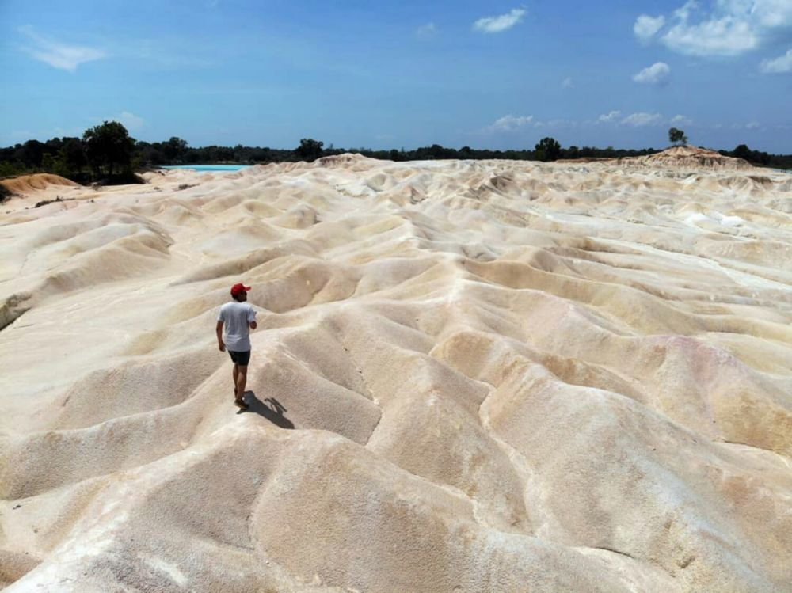

1. Pantai Trikora
Pantai Trikora mungkin akan sedikit mengingatkan pada suasana pantai di Pulau Belitung. Pantai terpanjang di Bintan ini dihiasi oleh sebaran batu granit putih besar. Dekorasi alam ini menjadikan Pantai Trikora salah satu pantai primadona di Bintan. Hamparan batu granit ini berpadu dengan birunya laut yang jernih. Wisatawan bisa menikmati keindahan ini dengan berbagai aktivitas. Habiskan waktu dengan berenang, snorkeling, atau sekadar berjemur sambil berfoto di sini.
2. Treasure bay Bintan

Crystal Lagoon atau Treasure Bay Bintan adalah laguna buatan pertama di Asia Tenggara. Laguna seluas 6.3 hektar ini menampung air laut yang sudah disuling. Tampilannya mirip seperti kolam raksasa dengan pinggiran berpasir menyerupai pantai. Di sekitar laguna berwarna biru cantik ini terdapat beragam akomodasi penginapan. Crystal Lagoon adalah destinasi yang tepat bagi pecinta olahraga air. Selain berenang, wisatawan juga bisa mencoba aneka wahana air di sini. Dari yang menenangkan seperti kayak hingga yang menguji adrenalin ada di sini. Rasakan sensasi ‘bermain di pantai’ yang berbeda saat mengunjungi Crystal Lagoon!
3. Bintan Mangrove
Ingin menikmati Bintan dari sisi lain? Cobalah untuk menikmati wisata hutan mangrove. Wisatawan akan diajak menyusuri Sungai Sebung yang diapit oleh rimbunnya pohon mangrove. Di tengah cuaca panas, pemandangan hijau ini akan jadi penyejuk mata. Pemandu akan mengajak wisatawan untuk mengenal lebih dekat keindahan alam Bintan lainnya. Jangan sampai lengah, karena beragam flora dan fauna siap meyambut di tempat tak terduga. Siapa tahu, ada ular atau kera yang terlihat berkeliaran di sana.
4. Golf Club
Pulau Bintan juga menjadi rumah bagi beberapa kawasan golf. Terdapat sejumlah klub golf eksklusif di sini. Area golf yang disediakan pun semuanya bertaraf internasional. Sering diadakan acara pariwisata-olahraga bagi para penggemar golf dari mancanegara di sini.
5. Resort
Pulau Bintan adalah salah satu pulau yang memiliki resor terpadu mewah pertama di Indonesia. Aneka jenis penginapan pun tersedia di sini. Wisatawan tinggal memilih sesuai selera, hotel mewah atau villa dengan sentuhan privasi.
6. Danau Biru Kijang

Butuh ide wisata murah-meriah? Coba kunjungi Danau Biru Kijang yang ada di daerah Kijang. Siapa sangka, danau ini sebenarnya merupakan lubang bekas galian tambang pasir. Lubang-lubang ini terisi air berwarna biru yang cantik. Sekarang, Danau Biru Kijang jadi destinasi wisata murah populer di Bintan. Keindahannya kerap dijadikan lokasi untuk berburu foto. Meski belum sepenuhnya dikembangkan sebagai tempat wisata, tak ada salahnya berkunjung kemari.
7. Gunung Pasir Busung
Ingin merasakan sensasi berwisata ke padang pasir layaknya di Timur Tengah? Maka kamu tidak boleh melewatkan destinasi wisata Tanjung Pinang yang satu ini, yaitu Gurun Pasir Busung. Wilayah yang merupakan bekas penambangan bauksit ini telah berubah menjadi wisata gurun pasir yang cantik, dan pastinya sangat instagrammable.
8. Kuil 500 Lohan
Tidak hanya wisata alam, Bintan juga menawarkan keunikan lainnya. Pulau ini menjadi pertemuan bagi berbagai kultur dan agama. Sehingga, tidak sedikit bangunan bersejarah atau tempat ibadah yang didirikan di sini. Salah satunya adalah Kuil 500 Lohan atau Kuil 1000 wajah. Di kuil ini, pengunjung akan menemukan patung-patung yang berjejer rapi. Patung-patung ini memiliki ekspresi wajah yang berbeda-beda. Percaya atau tidak, tidak ada satupun ekspresi yang sama di antara patung-patung tersebut.